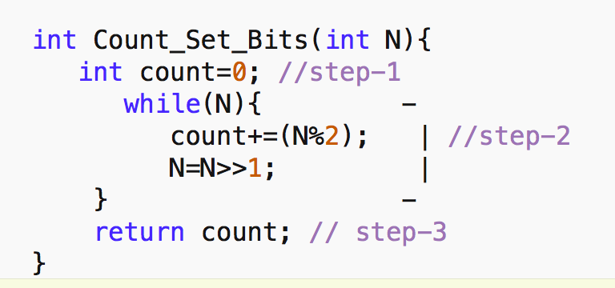
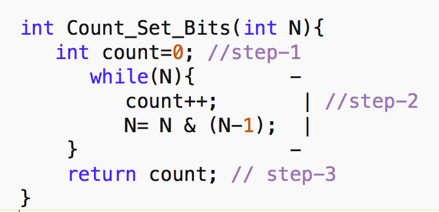
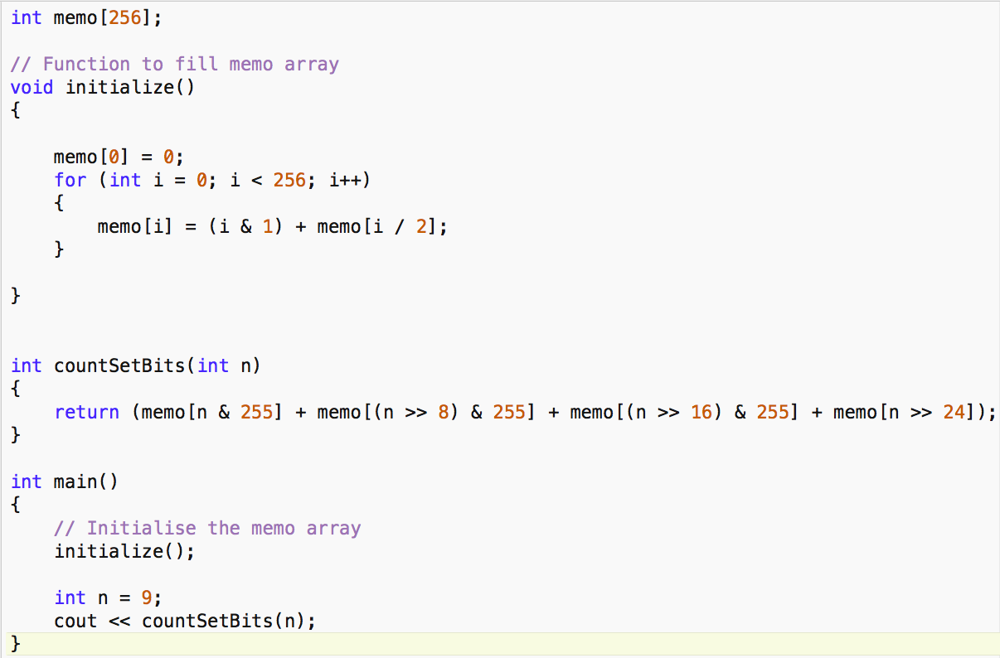

Aim -> Given a non-negative integer N count number of set bits(1s) in the binary representation of N.
Prerequisite-> Knowledge of Binary number System and bitwise AND and left shift operator.
Method-1 Brute Force :
Approach - Very basic approach or we can say the first approach which comes to our mind is just check the rightmost bit of the number(By N%2) then shift all bits one position right(equivalent to dividing it by 2) till the number is non zero.
Code in C++

Analysis->
1. Time Complexity-> In step 1 we are declaring a variable count and assigning it 0 and in step 3 we are returning it. Time for these steps are not dependent on the value of N. So, Step-1 and step 3 are constant-time operations(O(1)). In step-2 We are doing again some constant operations inside while loop but we have to analyze how many times our while loop runs.
So basically Given a number N we can possibly have 1+log(N) steps at max(from basic logarithmic knowledge). We can ignore 1 in our analysis so while loop runs log(N) times.
Time complexity- O(log(N)).
2. Space Complexity->Our memory usage is independent of N which means by varying the value of N our memory usage will not change as we are always declaring only one variable count So,
Space Complexity-> O(1).
Method-2 Brian Kernighan’s Algorithm
Here come a better approach and this algorithm has a name Brian Kernighan’s Algorithm it does the counting in
O(log(Number of Set bits)) .
Idea- So it uses a simple fact that when we apply bitwise AND between the N and (N-1) the result is a new number similar to N with its rightmost set bit flipped.
For e.g. Let’s say N=52
Binary Representation of N - 110100
Binary Representation of (N-1) - 110011
Bitwise And (N &(N-1)). - 110000
So as we can observe clearly N-1 flips all the bits starting from the rightmost set bits and since the bits are flipped from the rightmost set bit the and operation will result in 0 for them. Therefore the resultant operation is the flip of the rightmost set bit.
Now using this fact we no longer have to use our while loop for O(log(N)) times.
Code in C++

Analysis->
This is similar to our previous analysis ->
Just now our while loop will run for O(no. of set bits).
1.Time Complexity-> O(log(No. Of set Bits))
2.Space Complexity->O(1).
Method-3 Preprocessing for O(1) solution.
Idea - If we have to find number of set bits for many different numbers we can do some preprocessing so that we can answer each of the queries in O(1) time. Let’s see how it goes.
For every combination of 8 bits(256 combinations from 0-255 ), we precompute their total set bits. Now, we divide each query integer(32 bits) into 4 parts(8 bits each) and now we can directly add up the values of 4 parts by looking in memo array. Hence making it a constant time operation. Have a look at the code.
Please note here that 255 is 00000000 00000000 00000000 11111111
Code in C++

Explanation of the code-
1. First, we declare a memo array of 256 size(all combinations of 8 bits).
2. Then we fill this array using our initialize() function which goes as follows- memo[0] is 0 initialized than for subsequent ones, the last bit is checked and added to the previous result of(i/2) as memo[i/2] gives total number of set bits neglecting the rightmost one. And in this way, the memo array is filled.
3. Now in countSetBits() function, we are dividing integer into 4 parts as discussed previously and using the precomputed result on it and adding them to return the final result.
a) n& 255 -> equivalent to making all first 24 bits 0. So that we get information about only 8 bits from 25-32.
b) (n>>8)&255 -> first shifting n, 8 bits right and doing step as in a) so that now we get information of bits from 17-24.
c) (n>>16)&255 -> Similarly getting information of bits 9-16.
d) (n>>24) -> No AND operation here because anyways the first 24 bits will become 0. so that now we get information of bits from 1-8.
Analysis ->
1. Time Complexity- We are spending constant time in precomputation but our Queries can be answered in O(1).
2. Space Complexity->We are taking 256 size array whereas it is independent of N so O(1).
Note ->
1. You can also develop your own method if you understand Method-3 well For eg. you can divide integer into 4 bits each(8 parts) and precompute for it. Hence the constant space needed will decrease and the constant time needed will increase but will be O(1) only.
2. Also, this is not limited to 32 bits number you can also use it for any other datatype eg. long long integer just the parts will increase rest of the things remains the same.
It is highly recommended to solve below problems, they are handpicked by Programmers Army:
Practice Problems :-
• https://www.hackerrank.com/contests/dstest-1/challenges/set-bits
• https://leetcode.com/problems/counting-bits/
This article is contributed by Adarsh Agrawal
So that’s it for this article we will be coming up with our next article on further topics of Algorithms very soon till then keep learning, keep coding, keep reading and keep improving !!
Happy Coding
By Programmers Army 😊